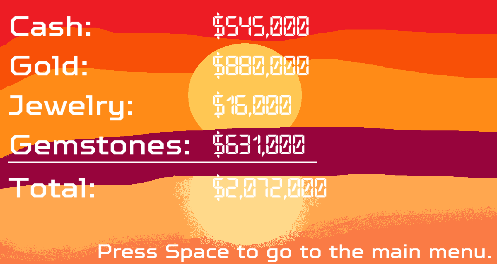

The Forever Heist
End of First Year Project

The forever heist is a 2D top down game in which you are a robber in an infinitely generating bank vault. The vault is full of guards which you must shoot as well as loot which you must grab and deposit at various garbage disposal chutes. The game was made using SFML and C++. It featured a custom collision detection and resolution system as well as an infinite map generator which was light on resources. This game was a solo project in which we had to develop all the systems from scratch. I learned a lot from this project, most notably different ways to optimise games which was important when you had a world which could go on forever.
This Game Features:
- Procedural infinite map
- Custom collision detection & resolution
- AI guard enemy
- Scoring with inventory type system
- Tile map usage
- OOP Design
